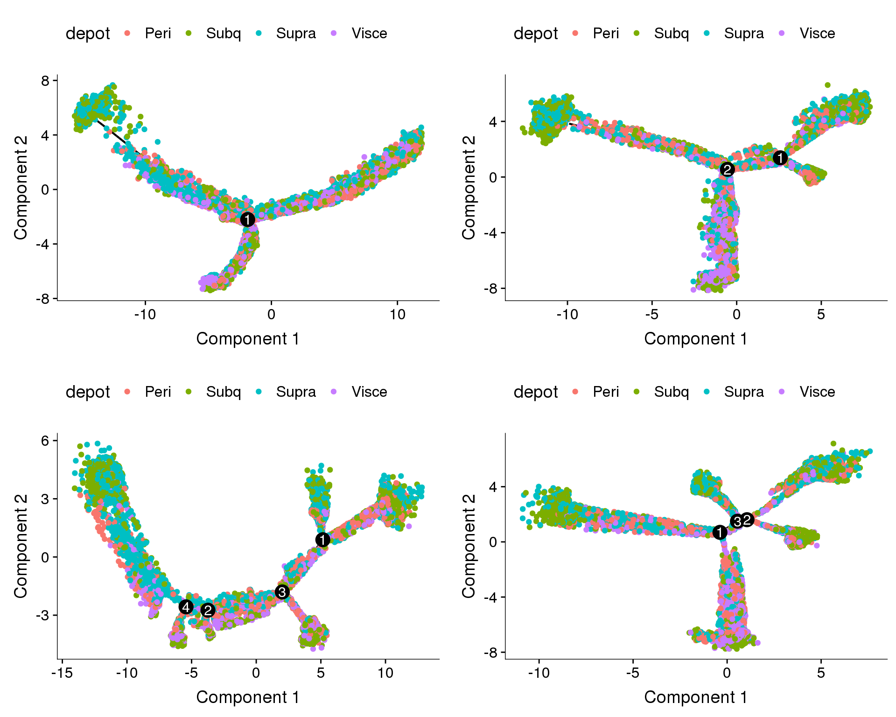
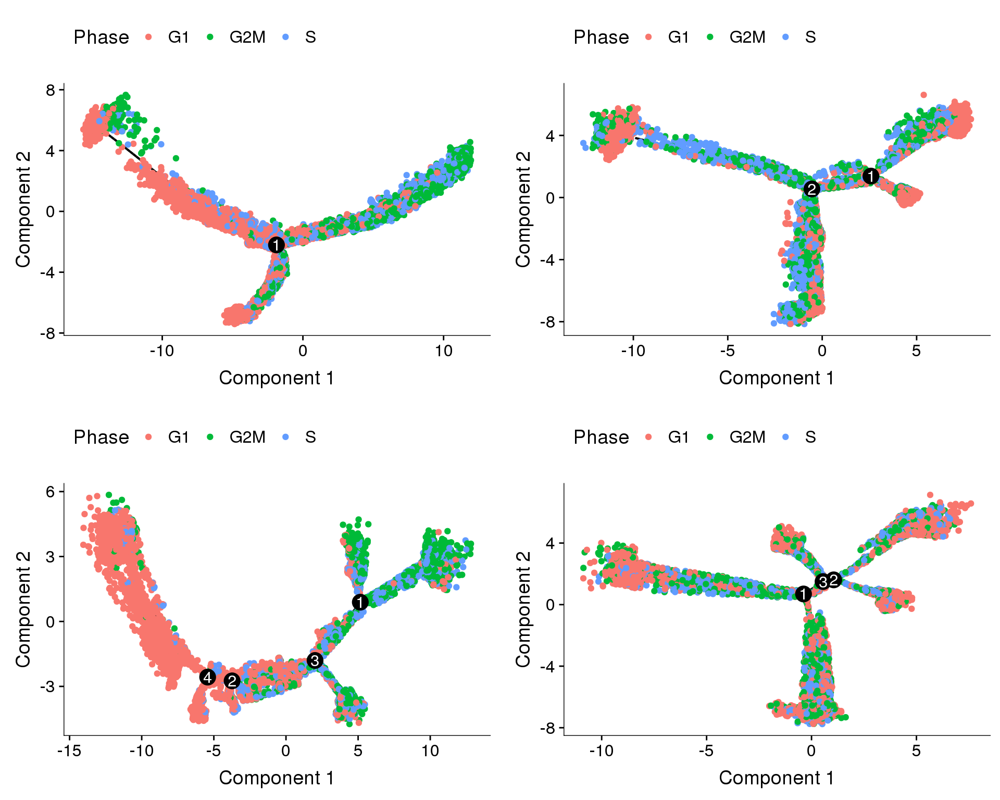
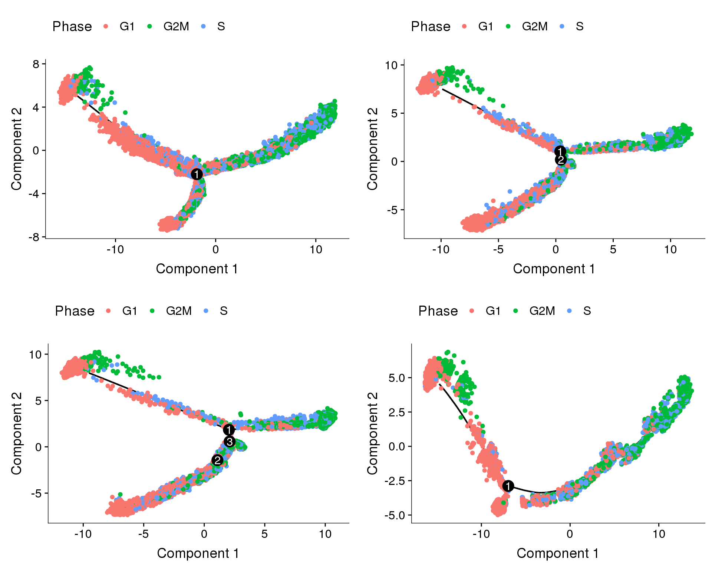
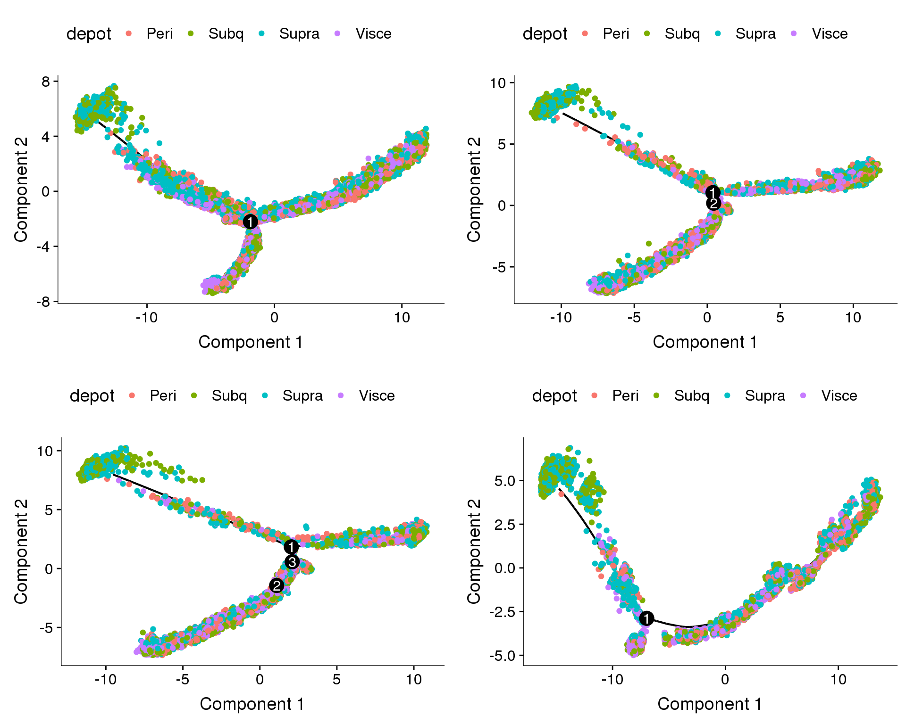
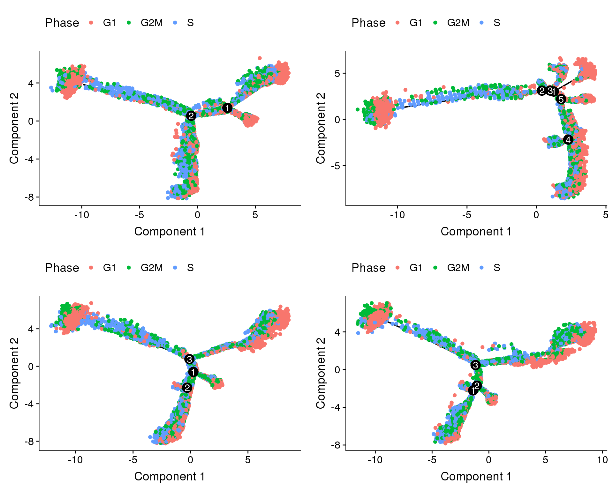
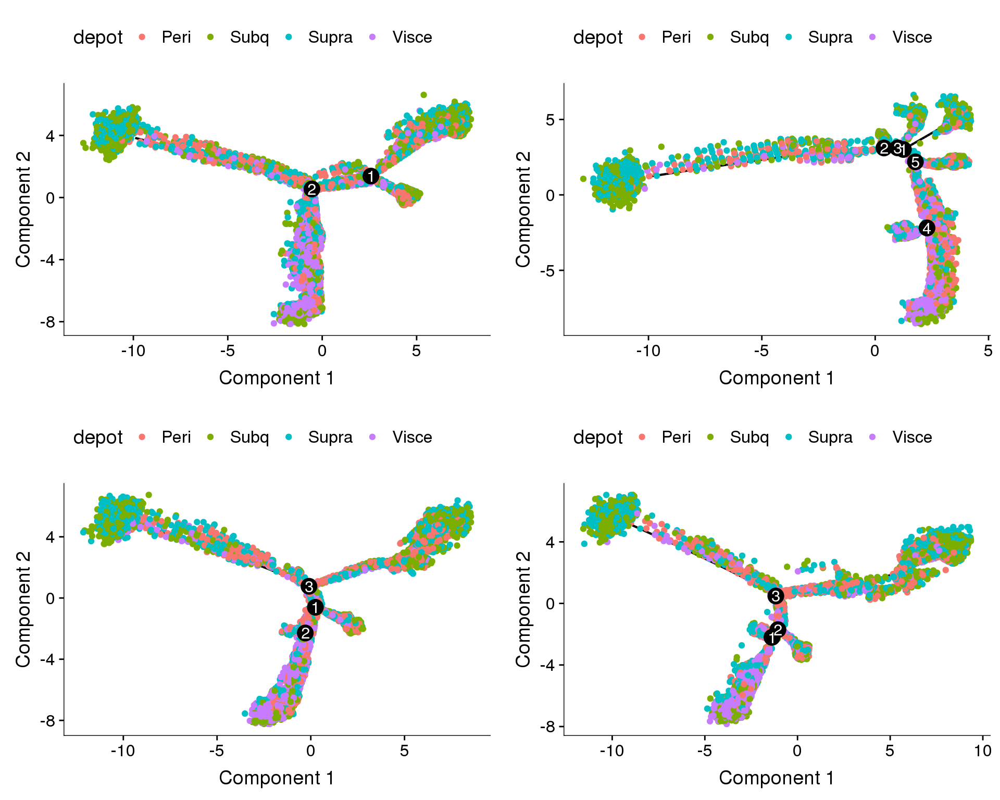
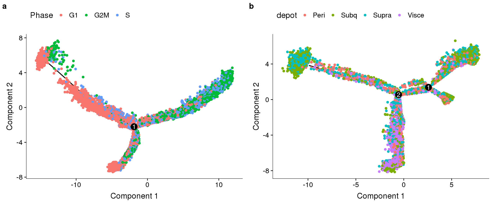
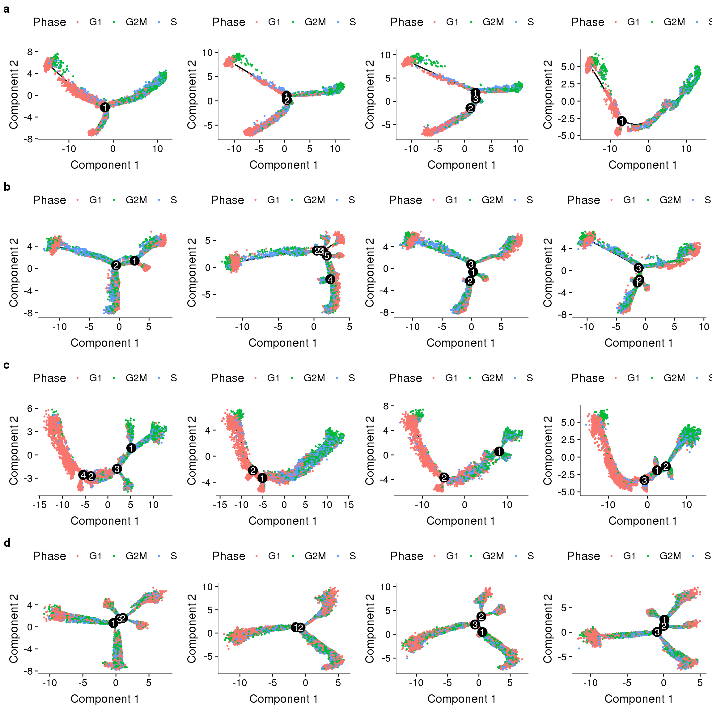

R Notebook
Last updated: 2018-11-07
workflowr checks: (Click a bullet for more information)-
✔ R Markdown file: up-to-date
Great! Since the R Markdown file has been committed to the Git repository, you know the exact version of the code that produced these results.
-
✔ Environment: empty
Great job! The global environment was empty. Objects defined in the global environment can affect the analysis in your R Markdown file in unknown ways. For reproduciblity it’s best to always run the code in an empty environment.
-
✔ Seed:
set.seed(20181026)The command
set.seed(20181026)was run prior to running the code in the R Markdown file. Setting a seed ensures that any results that rely on randomness, e.g. subsampling or permutations, are reproducible. -
✔ Session information: recorded
Great job! Recording the operating system, R version, and package versions is critical for reproducibility.
-
Great! You are using Git for version control. Tracking code development and connecting the code version to the results is critical for reproducibility. The version displayed above was the version of the Git repository at the time these results were generated.✔ Repository version: 1c178af
Note that you need to be careful to ensure that all relevant files for the analysis have been committed to Git prior to generating the results (you can usewflow_publishorwflow_git_commit). workflowr only checks the R Markdown file, but you know if there are other scripts or data files that it depends on. Below is the status of the Git repository when the results were generated:
Note that any generated files, e.g. HTML, png, CSS, etc., are not included in this status report because it is ok for generated content to have uncommitted changes.Ignored files: Ignored: output/monocle/ Unstaged changes: Modified: plots/180504_alignment.pdf Modified: plots/supplementary_figures/sfig_180504_alignment-discardedcells.pdf Modified: plots/supplementary_figures/sfig_180504_biweightplots.pdf Modified: plots/supplementary_figures/sfig_180504_qcplots.pdf
Expand here to see past versions:
Notebook for Monocle trajectories of the 180504 dataset.
To investigate the robustness of the trajectories, the dataset was randomly downsampled on 1000 cells per sample. 4 different types of regressions were used when running the DDRTree algorithm.
library(Seurat)
library(monocle)Loading all datasets.
cds.11 <- readRDS('output/monocle/180504/10x-180504-monocle-11')
cds.cc.11 <- readRDS('output/monocle/180504/10x-180504-monocle-cc-11')
cds.pm.umi.11 <- readRDS('output/monocle/180504/10x-180504-monocle-pm-umi-11')
cds.pm.umi.cc.11 <- readRDS('output/monocle/180504/10x-180504-monocle-pm-umi-cc-11')
cds.27 <- readRDS('output/monocle/180504/10x-180504-monocle-27')
cds.cc.27 <- readRDS('output/monocle/180504/10x-180504-monocle-cc-27')
cds.pm.umi.27 <- readRDS('output/monocle/180504/10x-180504-monocle-pm-umi-27')
cds.pm.umi.cc.27 <- readRDS('output/monocle/180504/10x-180504-monocle-pm-umi-cc-27')
cds.33 <- readRDS('output/monocle/180504/10x-180504-monocle-33')
cds.cc.33 <- readRDS('output/monocle/180504/10x-180504-monocle-cc-33')
cds.pm.umi.33 <- readRDS('output/monocle/180504/10x-180504-monocle-pm-umi-33')
cds.pm.umi.cc.33 <- readRDS('output/monocle/180504/10x-180504-monocle-pm-umi-cc-33')
cds.53 <- readRDS('output/monocle/180504/10x-180504-monocle-53')
cds.cc.53 <- readRDS('output/monocle/180504/10x-180504-monocle-cc-53')
cds.pm.umi.53 <- readRDS('output/monocle/180504/10x-180504-monocle-pm-umi-53')
cds.pm.umi.cc.53 <- readRDS('output/monocle/180504/10x-180504-monocle-pm-umi-cc-53')Trajectories of one subset
Trajectories of one subset, coloured by depot and cell cycle phase. Topleft: no regression. Topright: cell cycle regression. Bottom left: percent.mito + nUMI regression. Bottom right: percent.mito + nUMI + cell cycle regression.
plot_grid(
plot_cell_trajectory(cds.11, color_by='depot'),
plot_cell_trajectory(cds.cc.11, color_by='depot'),
plot_cell_trajectory(cds.pm.umi.11, color_by='depot'),
plot_cell_trajectory(cds.pm.umi.cc.11, color_by='depot'),
nrow=2)
Expand here to see past versions of fig1-1.png:
| Version | Author | Date |
|---|---|---|
| 3b4a19e | PytrikFolkertsma | 2018-11-07 |
plot_grid(
plot_cell_trajectory(cds.11, color_by='Phase'),
plot_cell_trajectory(cds.cc.11, color_by='Phase'),
plot_cell_trajectory(cds.pm.umi.11, color_by='Phase'),
plot_cell_trajectory(cds.pm.umi.cc.11, color_by='Phase'),
nrow=2)
Expand here to see past versions of fig2-1.png:
| Version | Author | Date |
|---|---|---|
| 3b4a19e | PytrikFolkertsma | 2018-11-07 |
Trajectories, no regression
Trajectories of the 4 subsets with no variables regressed out. The ordering of the cells seems to be influenced by the cell cycle state (though not completely). Interestingly in three of the trajectories there is a branch split.
plot_grid(
plot_cell_trajectory(cds.11, color_by='Phase'),
plot_cell_trajectory(cds.27, color_by='Phase'),
plot_cell_trajectory(cds.33, color_by='Phase'),
plot_cell_trajectory(cds.53, color_by='Phase'),
nrow=2)
Expand here to see past versions of fig3-1.png:
| Version | Author | Date |
|---|---|---|
| 3b4a19e | PytrikFolkertsma | 2018-11-07 |
Does the branch split discriminate between depots?
plot_grid(
plot_cell_trajectory(cds.11, color_by='depot'),
plot_cell_trajectory(cds.27, color_by='depot'),
plot_cell_trajectory(cds.33, color_by='depot'),
plot_cell_trajectory(cds.53, color_by='depot'),
nrow=2)
Expand here to see past versions of fig4-1.png:
| Version | Author | Date |
|---|---|---|
| 3b4a19e | PytrikFolkertsma | 2018-11-07 |
Trajectories, cell cycle regression
Trajectories of the 4 subsets with cell cycle effects regressed out. Topleft, bottom left and bottom right look similar but all have different number of branching points.
plot_grid(
plot_cell_trajectory(cds.cc.11, color_by='Phase'),
plot_cell_trajectory(cds.cc.27, color_by='Phase'),
plot_cell_trajectory(cds.cc.33, color_by='Phase'),
plot_cell_trajectory(cds.cc.53, color_by='Phase'),
nrow=2)
Expand here to see past versions of fig5-1.png:
| Version | Author | Date |
|---|---|---|
| 3b4a19e | PytrikFolkertsma | 2018-11-07 |
Coloured on depot. Branches do not
plot_grid(
plot_cell_trajectory(cds.cc.11, color_by='depot'),
plot_cell_trajectory(cds.cc.27, color_by='depot'),
plot_cell_trajectory(cds.cc.33, color_by='depot'),
plot_cell_trajectory(cds.cc.53, color_by='depot'),
nrow=2)
Expand here to see past versions of fig6-1.png:
| Version | Author | Date |
|---|---|---|
| 3b4a19e | PytrikFolkertsma | 2018-11-07 |
Trajectories, percent.mito + nUMI regression
In general all cells seem to follow one direction, and the general shape of the trajectories are similar. The branch splits in the trajectories above (no regression and cell cycle regression) could be the effects of differences in percent.mito and nUMI, and that’s why we don’t see that here.
plot_grid(
plot_cell_trajectory(cds.pm.umi.11, color_by='Phase'),
plot_cell_trajectory(cds.pm.umi.27, color_by='Phase'),
plot_cell_trajectory(cds.pm.umi.33, color_by='Phase'),
plot_cell_trajectory(cds.pm.umi.53, color_by='Phase'),
nrow=2)
Expand here to see past versions of fig7-1.png:
| Version | Author | Date |
|---|---|---|
| 3b4a19e | PytrikFolkertsma | 2018-11-07 |
Trajectories, percent.mito + nUMI + cell cycle regression
Trajectories with percent.mito, nUMI and cell cycle effects regressed out. Doesn’t look very convincing.
plot_grid(
plot_cell_trajectory(cds.pm.umi.cc.11, color_by='depot'),
plot_cell_trajectory(cds.pm.umi.cc.27, color_by='depot'),
plot_cell_trajectory(cds.pm.umi.cc.33, color_by='depot'),
plot_cell_trajectory(cds.pm.umi.cc.53, color_by='depot'),
nrow=2)
Expand here to see past versions of fig8-1.png:
| Version | Author | Date |
|---|---|---|
| 3b4a19e | PytrikFolkertsma | 2018-11-07 |
Conclusions
- Differences between depots or fat type were not captured by Monocle. The preadipocytes are at this timepoint likely very similar too each other.
- Regressions affect the resulting trajectories a lot.
Figures for report
fig <- plot_grid(
plot_cell_trajectory(cds.11, color_by='Phase'),
plot_cell_trajectory(cds.cc.11, color_by='depot'),
nrow=1, labels='auto')
save_plot("plots/180504_monocle_noreg-ccreg.pdf", fig, base_width=12, base_height=5)
fig
Expand here to see past versions of fig9-1.png:
| Version | Author | Date |
|---|---|---|
| 3b4a19e | PytrikFolkertsma | 2018-11-07 |
noreg <- plot_grid(
plot_cell_trajectory(cds.11, color_by='Phase', cell_size = 0.5),
plot_cell_trajectory(cds.27, color_by='Phase', cell_size = 0.5),
plot_cell_trajectory(cds.33, color_by='Phase', cell_size = 0.5),
plot_cell_trajectory(cds.53, color_by='Phase', cell_size = 0.5),
nrow=1)
ccreg <- plot_grid(
plot_cell_trajectory(cds.cc.11, color_by='Phase', cell_size = 0.5),
plot_cell_trajectory(cds.cc.27, color_by='Phase', cell_size = 0.5),
plot_cell_trajectory(cds.cc.33, color_by='Phase', cell_size = 0.5),
plot_cell_trajectory(cds.cc.53, color_by='Phase', cell_size = 0.5),
nrow=1)
pmumireg <- plot_grid(
plot_cell_trajectory(cds.pm.umi.11, color_by='Phase', cell_size = 0.5),
plot_cell_trajectory(cds.pm.umi.27, color_by='Phase', cell_size = 0.5),
plot_cell_trajectory(cds.pm.umi.33, color_by='Phase', cell_size = 0.5),
plot_cell_trajectory(cds.pm.umi.53, color_by='Phase', cell_size = 0.5),
nrow=1)
pmumiccreg <- plot_grid(
plot_cell_trajectory(cds.pm.umi.cc.11, color_by='Phase', cell_size = 0.5),
plot_cell_trajectory(cds.pm.umi.cc.27, color_by='Phase', cell_size = 0.5),
plot_cell_trajectory(cds.pm.umi.cc.33, color_by='Phase', cell_size = 0.5),
plot_cell_trajectory(cds.pm.umi.cc.53, color_by='Phase', cell_size = 0.5),
nrow=1)
sfig <- plot_grid(
noreg,
ccreg,
pmumireg,
pmumiccreg,
labels='auto', nrow=4
)
save_plot("plots/supplementary_figures/sfig_180504_monocle.pdf", sfig, base_width=12, base_height=12)
sfig
Expand here to see past versions of fig10-1.png:
| Version | Author | Date |
|---|---|---|
| 3b4a19e | PytrikFolkertsma | 2018-11-07 |
Session information
sessionInfo()R version 3.4.3 (2017-11-30)
Platform: x86_64-redhat-linux-gnu (64-bit)
Running under: Red Hat Enterprise Linux
Matrix products: default
BLAS/LAPACK: /usr/lib64/R/lib/libRblas.so
locale:
[1] LC_CTYPE=en_US.UTF-8 LC_NUMERIC=C
[3] LC_TIME=en_US.UTF-8 LC_COLLATE=en_US.UTF-8
[5] LC_MONETARY=en_US.UTF-8 LC_MESSAGES=en_US.UTF-8
[7] LC_PAPER=en_US.UTF-8 LC_NAME=C
[9] LC_ADDRESS=C LC_TELEPHONE=C
[11] LC_MEASUREMENT=en_US.UTF-8 LC_IDENTIFICATION=C
attached base packages:
[1] splines stats4 parallel stats graphics grDevices utils
[8] datasets methods base
other attached packages:
[1] monocle_2.6.4 DDRTree_0.1.5 irlba_2.3.2
[4] VGAM_1.0-6 Biobase_2.38.0 BiocGenerics_0.24.0
[7] Seurat_2.3.4 Matrix_1.2-14 cowplot_0.9.3
[10] ggplot2_3.0.0
loaded via a namespace (and not attached):
[1] Rtsne_0.13 colorspace_1.3-2 class_7.3-14
[4] modeltools_0.2-22 ggridges_0.5.0 mclust_5.4.1
[7] rprojroot_1.3-2 htmlTable_1.12 base64enc_0.1-3
[10] rstudioapi_0.7 proxy_0.4-22 ggrepel_0.8.0
[13] flexmix_2.3-14 bit64_0.9-7 mvtnorm_1.0-8
[16] codetools_0.2-15 R.methodsS3_1.7.1 docopt_0.6
[19] robustbase_0.93-2 knitr_1.20 Formula_1.2-3
[22] jsonlite_1.5 workflowr_1.1.1 ica_1.0-2
[25] cluster_2.0.7-1 kernlab_0.9-27 png_0.1-7
[28] R.oo_1.22.0 pheatmap_1.0.10 compiler_3.4.3
[31] httr_1.3.1 backports_1.1.2 assertthat_0.2.0
[34] lazyeval_0.2.1 limma_3.34.9 lars_1.2
[37] acepack_1.4.1 htmltools_0.3.6 tools_3.4.3
[40] bindrcpp_0.2.2 igraph_1.2.2 gtable_0.2.0
[43] glue_1.3.0 RANN_2.6 reshape2_1.4.3
[46] dplyr_0.7.6 Rcpp_0.12.18 slam_0.1-43
[49] trimcluster_0.1-2.1 gdata_2.18.0 ape_5.1
[52] nlme_3.1-137 iterators_1.0.10 fpc_2.1-11.1
[55] gbRd_0.4-11 lmtest_0.9-36 stringr_1.3.1
[58] gtools_3.8.1 DEoptimR_1.0-8 MASS_7.3-50
[61] zoo_1.8-3 scales_1.0.0 doSNOW_1.0.16
[64] RColorBrewer_1.1-2 yaml_2.2.0 reticulate_1.10
[67] pbapply_1.3-4 gridExtra_2.3 rpart_4.1-13
[70] segmented_0.5-3.0 fastICA_1.2-1 latticeExtra_0.6-28
[73] stringi_1.2.4 foreach_1.4.4 checkmate_1.8.5
[76] caTools_1.17.1.1 densityClust_0.3 bibtex_0.4.2
[79] matrixStats_0.54.0 Rdpack_0.9-0 SDMTools_1.1-221
[82] rlang_0.2.2 pkgconfig_2.0.2 dtw_1.20-1
[85] prabclus_2.2-6 bitops_1.0-6 qlcMatrix_0.9.7
[88] evaluate_0.11 lattice_0.20-35 ROCR_1.0-7
[91] purrr_0.2.5 bindr_0.1.1 labeling_0.3
[94] htmlwidgets_1.2 bit_1.1-14 tidyselect_0.2.4
[97] plyr_1.8.4 magrittr_1.5 R6_2.2.2
[100] snow_0.4-2 gplots_3.0.1 Hmisc_4.1-1
[103] combinat_0.0-8 pillar_1.3.0 whisker_0.3-2
[106] foreign_0.8-71 withr_2.1.2 fitdistrplus_1.0-9
[109] mixtools_1.1.0 survival_2.42-6 nnet_7.3-12
[112] tsne_0.1-3 tibble_1.4.2 crayon_1.3.4
[115] hdf5r_1.0.0 KernSmooth_2.23-15 rmarkdown_1.10
[118] viridis_0.5.1 grid_3.4.3 data.table_1.11.4
[121] FNN_1.1.2.1 git2r_0.23.0 sparsesvd_0.1-4
[124] HSMMSingleCell_0.112.0 metap_1.0 digest_0.6.16
[127] diptest_0.75-7 tidyr_0.8.1 R.utils_2.7.0
[130] munsell_0.5.0 viridisLite_0.3.0 This reproducible R Markdown analysis was created with workflowr 1.1.1